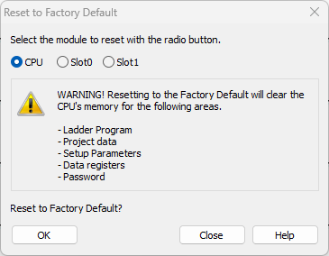
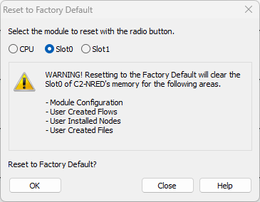
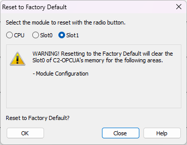
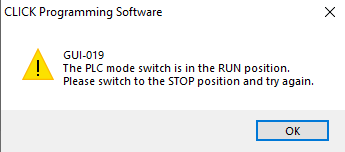

Topic: CL099

| Reset to Factory Default |
Topic: CL099
|
Use this selection to Reset all the PLC configuration settings to the original factory set default settings. Reset Factory Defaults can also be accomplished in the C0-1x and C2 CPU's using the Run/Stop switch or using the Bluetooth button on models with Bluetooth capability. Also see Chapter 6 of the User Manual.
In the PLC menu, select Reset to Factory Defaults
.



A CLICK PLUS PLC may have up to 2 Intelligent modules in Slots 0 and 1. If performing a Reset to Factory default, the process described below must be performed for each Intelligent module that needs to be reset to default settings.
|
|
CAUTION: Before continuing with the Reset to Factory Default operation, PLEASE READ the Warning on the window shown above and be aware of the settings that will be changed. |
|
Read the Warning on the window and if you still want to Reset click on the OK button. If you want to cancel the Reset to Factory Default operation, click on the Close button.
Once the OK button is selected, the confirmation window shown below will open.

Click Yes to continue with the Reset to Factory Default or No to cancel the process. Once you click on Yes, the Reset to Factory Default process will begin. In order for the Reset to continue, the PLC needs to be on the Stop mode. Please make sure the mode switch is set to STOP. If you proceed on Run mode, the GUI-019 Error window shown below will display.

If you get this error, click on OK, set the PLC to STOP mode and try again. If you are connected to the CLICK PLC by Ethernet, the following warning will appear.

Once the Reset to Factory Default process begins, the process progress window shown below will open.

When the Reset process completes, the completed window shown below will open. Click OK to close and continue working with the programming software.

The CLICK Factory Default Tool is installed with CLICK Programming Software v3.00 or later. It can be opened from the Start Menu of your PC.
On the C2-02CPU and C2-03CPU, use the BT button on the PLC. To Reset the PLC to its factory default state press and hold in the BT Pairing Button on the front of the PLC for 5-6 seconds, until the BT LED begins flashing very fast. The RUN/STOP switch must be in the STOP position.